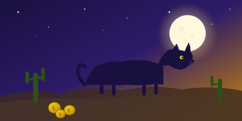
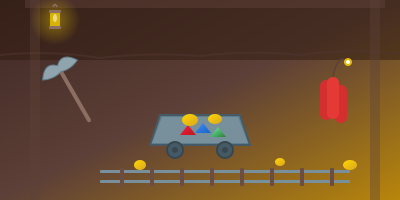
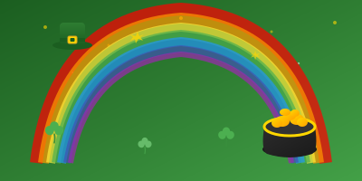
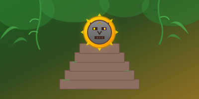

Online slots are by far the most popular casino game among Irish players, and for good reason. With thousands of titles available at the top casinos serving Ireland, the choice can be overwhelming. We've spent months spinning the reels on every major slot to bring you this definitive guide to the 10 best online slots in Ireland for 2026.
Whether you're after massive Megaways wins, Irish-themed charm, or steady low-volatility entertainment, this page covers it all. Every slot below has been tested with real money at casinos available to Irish players.
💡 Quick Guide to Slot Stats
RTP (Return to Player) — The theoretical percentage returned over millions of spins. Above 96% is considered good.
Volatility — How often and how big wins land. Low = frequent small wins. High = rarer but bigger wins.
Max Win — The highest possible payout as a multiple of your stake (e.g., 5,000x means a €1 bet could win €5,000).
Top 10 Online Slots for Irish Players

Gates of Olympus
Pragmatic PlayZeus reigns supreme on the Irish reels. Gates of Olympus uses a tumble mechanic where winning symbols vanish and new ones fall in, allowing chain reactions. Random multipliers of up to 500x can appear on any spin. The free spins round is where the magic happens — multipliers accumulate rather than reset, creating the potential for those legendary 5,000x wins. It's easy to see why this is Ireland's most-played slot in 2026.

Sweet Bonanza
Pragmatic PlayA candy-coated thrill ride with serious win potential. Sweet Bonanza features the same tumble mechanic as Gates of Olympus but wraps it in a colourful fruit-and-sweets theme. The standout feature is the multiplier bomb — rainbow-coloured lollipops that land during free spins and multiply your wins by up to 100x. With a staggering 21,175x max win, this is one of the highest potential payouts you'll find on any slot available in Ireland.

Big Bass Bonanza
Pragmatic PlayBig Bass Bonanza has spawned an entire franchise of sequels, but the original remains a firm favourite among Irish slot players. The gameplay is straightforward: land three or more scatters to trigger 10 free spins, where the fisherman wild symbol collects the values of any money symbols on screen. The 96.71% RTP is the highest on our list, making it one of the better-value slots mathematically. Great for players who like simple mechanics with decent win potential.

Book of Dead
Play'n GOThe undisputed king of "Book of" slots. Rich Wilde's Egyptian adventure is one of the most iconic online slots ever made, and it remains massively popular with Irish players. Land three Book symbols to trigger 10 free spins with a randomly chosen expanding symbol. When the right symbol expands across the reels, the results can be spectacular — full screens of the explorer symbol pay 5,000x. High volatility means patience is required, but when it pays, it pays big.

Starburst
NetEntStill one of the most played slots on the planet after more than a decade. Starburst's appeal lies in its simplicity and low volatility — this is the slot you play when you want steady entertainment without your balance swinging wildly. The expanding Starburst Wild on the middle three reels triggers re-spins and pays both ways. Perfect for beginners or anyone who wants a relaxed session. It's also the most commonly offered slot in Irish free spin bonuses.

Crazy Time
EvolutionNot a traditional slot, but Crazy Time has become one of the most-played games in Ireland and deserves its spot on this list. This live game show from Evolution features a giant money wheel hosted by a real presenter. The wheel can trigger four bonus rounds — Cash Hunt, Pachinko, Coin Flip, and Crazy Time — each offering massive multiplier potential. The Crazy Time bonus itself can hit multipliers up to 25,000x. The social, interactive nature makes it hugely popular for Irish players who want something different from standard slots. See more live games →

Wolf Gold
Pragmatic PlayWolf Gold brings the American wilderness to your screen with a medium volatility profile that suits a wide range of players. The standout feature is the Money Respin — land six or more moon symbols to trigger a Hold & Spin mechanic where you collect moon values. Fill all 15 positions to win the Mega Jackpot. With stacked wilds on reels 2, 3, and 4 during the base game, and a free spins round with giant merged symbols, Wolf Gold delivers a complete slot experience.

Bonanza Megaways
Big Time GamingThe slot that started the Megaways revolution. Bonanza features up to 117,649 ways to win thanks to Big Time Gaming's variable reel mechanic. The mining-themed slot uses tumbling reels where consecutive wins build on each other. The real excitement is in the free spins round, where an unlimited win multiplier increases with every tumble win. This is how the 12,000x max win becomes achievable. High volatility means big swings, but the potential is enormous.

Rainbow Riches ☘
Barcrest (SG Digital)No list of slots for Irish players would be complete without Rainbow Riches. This Irish-themed classic features leprechauns, pots of gold, and rainbows — and it's been a staple on these shores for years. Three bonus features keep things interesting: Road to Riches (a multiplier trail), Wishing Well (pick a well for a multiplier), and Pots of Gold (spinning pots with cash values). The RTP is lower than others on this list at 95%, and the max win of 500x is modest, but Rainbow Riches delivers charm and nostalgia in spades. The franchise has also expanded into many sequels including Rainbow Riches Megaways.

Gonzo's Quest
NetEntGonzo's Quest pioneered the Avalanche mechanic long before tumbling reels became standard. Set in the jungles of South America, Gonzo searches for the lost city of El Dorado. Consecutive Avalanche wins increase the multiplier from 1x to 5x in the base game, and up to 15x during free falls. The 3D graphics and animated Gonzo character still hold up beautifully. Medium volatility provides a balanced experience, and the sequel Gonzo's Quest Megaways adds the variable reel engine for even more excitement.
Slot Categories
Not sure what type of slot suits your style? Here's a breakdown of the most popular categories available at Irish casinos.
🎲 Megaways Slots
Variable reel sizes create up to 117,649+ ways to win on every spin. Tumbling reels and increasing multipliers make Megaways slots some of the most exciting available.
Popular titles: Bonanza Megaways, Gonzo's Quest Megaways, Big Bass Bonanza Megaways, Rainbow Riches Megaways
💰 Jackpot Slots
Progressive jackpots pool a percentage of every bet into a growing prize. Some jackpots reach millions of euros. Fixed jackpots offer smaller but more frequent big wins.
Popular titles: Mega Moolah, Wolf Gold, Divine Fortune, Mega Fortune
💸 Bonus Buy Slots
Skip straight to the free spins round by paying a premium (usually 80-100x your bet). Popular with players who don't want to wait for scatters. Not available at all casinos.
Popular titles: Gates of Olympus, Sweet Bonanza, Dog House Megaways, Money Train 4
📈 High RTP Slots
Slots with an RTP above 96.5% give you the best theoretical return over time. These are mathematically the best-value slots, though individual sessions will always vary.
Popular titles: Big Bass Bonanza (96.71%), Blood Suckers (98%), Starmania (97.87%), 1429 Uncharted Seas (98.5%)
☘ Irish Themed Slots
Leprechauns, rainbows, and pots of gold — Irish-themed slots are a genre unto themselves. They range from charming classics to modern Megaways versions.
Popular titles: Rainbow Riches, Rainbow Jackpots, Leprechaun Song, Irish Pot Luck, 9 Pots of Gold
🃏 Classic Slots
Simple 3-reel or 5-reel slots with straightforward gameplay. No complex bonus rounds — just clean, traditional slot action. Often low volatility with frequent small wins.
Popular titles: Starburst, Fire Joker, Twin Spin, Bar Bar Black Sheep, Mega Joker
Top Slot Providers in Ireland
The quality of your slot experience depends largely on who made the game. Here are the six providers whose slots dominate the Irish market.
| Provider | Known For | Top Slots | Our Rating |
|---|---|---|---|
| Pragmatic Play | Tumble mechanics, Bonus Buy, massive game library | Gates of Olympus, Sweet Bonanza, Big Bass Bonanza | 9.5/10 |
| NetEnt | Polished graphics, innovative features, iconic classics | Starburst, Gonzo's Quest, Dead or Alive 2 | 9.3/10 |
| Play'n GO | Adventure themes, high volatility, expanding symbols | Book of Dead, Reactoonz, Rise of Olympus | 9.2/10 |
| Evolution | Live game shows, hybrid live/slot games | Crazy Time, Lightning Roulette, Monopoly Live | 9.4/10 |
| Big Time Gaming | Megaways mechanic, high volatility, unlimited multipliers | Bonanza Megaways, Extra Chilli, White Rabbit | 9.1/10 |
| Microgaming | Largest progressive jackpot network, vast library | Mega Moolah, Immortal Romance, Thunderstruck II | 8.8/10 |
How We Rate Slots
Every slot on this page is evaluated against four key criteria by our team of experienced Irish slot players.
RTP & Maths
We verify the published RTP against independent testing. We also assess volatility and hit frequency to understand real-world gameplay patterns.
Features & Gameplay
Bonus rounds, free spins, multipliers, and special mechanics. We test how often features trigger and whether they deliver meaningful wins.
Design & Audio
Visual quality, animation smoothness, soundtrack, and mobile optimisation. A great slot should look and sound brilliant on any device.
Fairness & Availability
We check that the slot is certified by an independent testing lab (eCOGRA, iTech Labs, etc.) and that it's widely available at reputable Irish casinos.